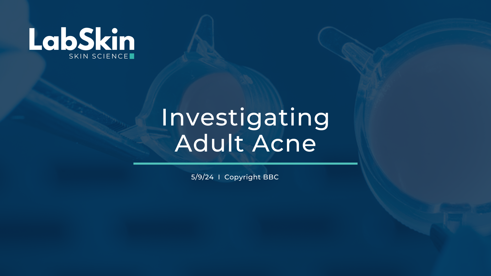
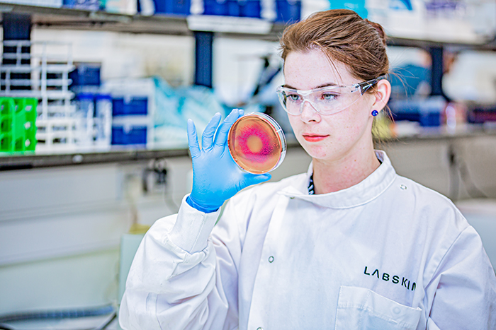
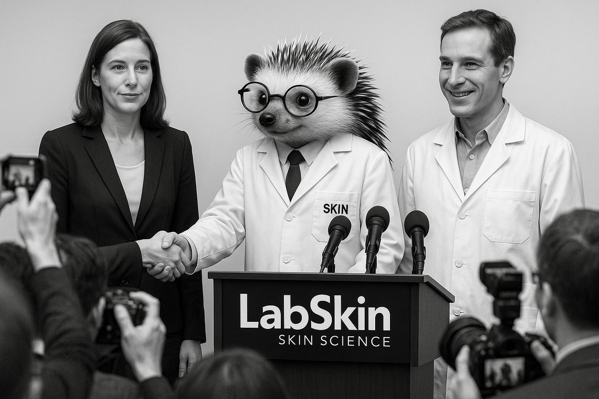
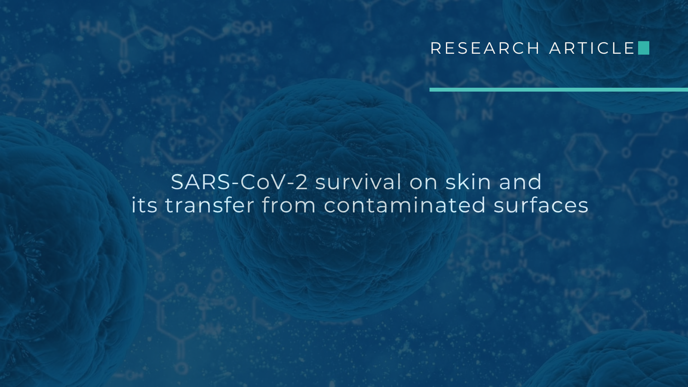
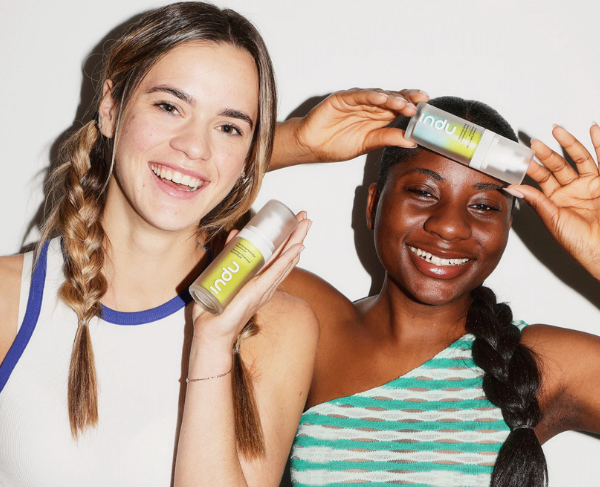

BBC FEATURE: INVESTIGATING ADULT ACNE
Discover how Labskin’s 3D human skin models support more relevant and reliable research outcomes.
Learn moreLabskin is the leading commercially available lab-grown full-thickness human skin model that naturally supports the skin's microbiome, enabling reliable, ethical and scientifically robust testing.
Explore Labskin's range of advanced human skin models developed to support product development, efficacy testing, disease modelling and specialist skin research.
The original full-thickness human skin model providing a reliable healthy skin baseline for product testing, efficacy studies and microbiome research.
Explore Model →Includes a disrupted skin barrier making it ideal for barrier cream evaluation, inflamed skin studies and drug efficacy testing for atopic dermatitis.
Explore Model →Designed to support melanoma research and enable testing of emerging therapies and treatment approaches in a controlled laboratory environment.
Explore Model →Labskin-S with controlled wounds applied, allowing researchers to investigate wound repair, regeneration and wound healing products.
Explore Model →Developed for pigmentation and skin tone research, helping organisations evaluate products across a broader range of skin types.
Explore Model →
Labskin develops advanced human skin models that replicate real skin biology, enabling reliable product safety, efficacy and microbiome testing for cosmetics, pharmaceutical and biotech research.
Replicates the structure and function of human skin, providing a reliable platform for in vitro testing and product evaluation.
Uniquely supports skin microflora, enabling simultaneous analysis of both cellular and microbial responses.
Supporting cosmetics, skincare, pharmaceutical, biotech and academic organisations with scientifically robust testing.
Explore the latest updates, research insights, publications and scientific developments from Labskin.

Discover how Labskin’s 3D human skin models support more relevant and reliable research outcomes.
Learn more
Learn how microbiome-enabled models help researchers explore product performance and skin health.
Learn more
From cosmetics to pharmaceuticals, Labskin provides practical model-led solutions for industry challenges.
Learn moreHear how organisations use Labskin models to support reliable, ethical and human-relevant skin research.

“Labskin provides a highly relevant, valuable and reproducible human skin model that enabled us to investigate topical delivery and skin responses in a controlled and physiologically meaningful way.”
"Visiting Labskin opened up exciting opportunities for in vitro testing. Their advanced skin models gave our team valuable ideas for supporting our brands and customers with stronger claim and ingredient substantiation."
"Efficient service with high quality results. We are very grateful for the calls and training advice offered by all staff."
“Great service, very science-forward, appreciate the level of details of the reporting and the overall customer service.”